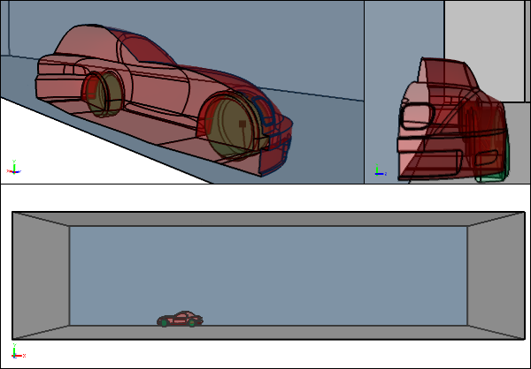
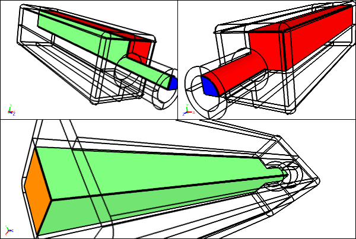

Speed Up CFD with Symmetry and Cyclic Conditions
Symmetry (or planar symmetry) and cyclic (or rotational symmetry) boundary conditions for Computational Fluid Dynamics (CFD) can often save you 50% or more in simulation turnaround time. Alternatively you can use the freed up memory to run more accurate simulations with more mesh cells clustered in areas of interest. Clearly these simulations are worth considering if your model satisfies the symmetry or cyclic criteria.
Symmetric Flow Volume for the External Aerodynamic CFD Analysis of a CarSingle symmetry plane
Planar Symmetry
If your geometry has one or two symmetry planes and is therefore likely to have a symmetric flow field then you can use either a half model (one symmetry plane) or a quarter model (two symmetry planes).
Symmetric Flow Volume for an Internal CFD Pipe Flow AnalysisTwo symmetry planes shown in green
It's not a given that a symmetric model with also have a symmetric flow field. For instance, the flow over a symmetric cylinder in a certain Reynolds number range exhibits vortex shedding that is clearly not a symmetric flow field. However, in many instances for external flow over cars and airplanes the flow is symmetric enough to only run a simulation on symmetric half model. If you are interested in the effect of a yaw condition (side wind) on a car or airplane then the symmetric flow field criteria will not be satisfied and you will need to model the entire object.
For a CFD simulation you typically assign a symmetry boundary condition to each face that represents the symmetry plane(s) in your model.
Cyclic (Rotational Symmetry)
If your geometry has one or more rotational symmetries then it is likely to have a cyclic flow field. Typically many rotating machines, e.g., turbines and compressors, have cyclic geometry equal to the number of blades. For a compressor with 10 blades, for example, you only need to model 1/10 of the entire compressor, which is a huge saving (90% reduction) in computing resources.
 Cyclic Flow Volume for the CFD Analysis of a Compressor
Cyclic Flow Volume for the CFD Analysis of a Compressor
In a CFD simulation you typically identify pairs of cyclic faces such that the paired faces exactly coincide when the model is rotated through the rotational symmetry angle, e.g., 36 degrees for a 10-blade compressor.
Notes
Caedium Professional supports both planar symmetry using a Symmetry Local condition and rotational symmetry using a Cyclic condition.
Feedback
Questions? Ideas? Problems?

Recent blog posts
- CFD Simulates Distant Past
- Background on the Caedium v6.0 Release
- Long-Necked Dinosaurs Succumb To CFD
- CFD Provides Insight Into Mystery Fossils
- Wind Turbine Design According to Insects
- Runners Discover Drafting
- Wind Tunnel and CFD Reveal Best Cycling Tuck
- Active Aerodynamics on the Lamborghini Huracán Performante
- Fluidic Logic
- Stonehenge Vortex Revealed as April Fools' Day Distortion Field
 Get our Blog feed
Get our Blog feed